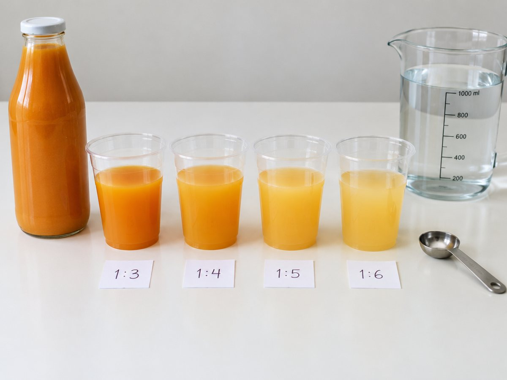

전체 단원 › 실험·활동 › 6학년 1학기 수학
주스 비율 맞추기 실험

원액과 물을 1:3, 1:4, 1:5로 섞어 맛을 비교하며 비, 비율, 백분율을 맛으로 알아봐요.
30분 · 난이도 ★☆☆ 쉬움
준비물
- 과일 원액이나 매실청 — 물에 타서 마시는 음료면 무엇이든
- 종이컵 6개 이상 — 계량 컵과 맛보기 컵
- 숟가락 또는 작은 계량컵 — 같은 양을 재는 단위로 써요
- 비율 실험 기록지 도안 — 아래에서 내려받아요
하는 방법
- 단위 정하기
숟가락 1번을 '1'로 정해요. 같은 숟가락을 끝까지 써야 비교가 정확해요. - 1:3 주스 만들기
컵에 원액 2숟가락, 물 6숟가락을 넣어 섞어요. 원액 : 물 = 2 : 6 = 1 : 3이에요. - 다른 비율 만들기
1:4, 1:5 컵도 만들어 이름표를 붙여요. 어느 쪽이 더 진할지 먼저 예상해요. - 맛 비교하기
가족이 눈을 감고 맛보며 진한 순서를 맞혀요. 가장 맛있는 비율에 투표해요. - 비율 계산하기
원액 양 ÷ 전체 양을 계산해요. 1:3 주스는 1 ÷ 4 = 0.25, 즉 25%가 원액이에요. - 양 늘려 보기
가장 맛있는 비율로 1L 물병을 채우려면 원액이 얼마나 필요한지 계산해요.
생각해 봐요
- 원액 2숟가락 : 물 6숟가락과 원액 3숟가락 : 물 9숟가락은 맛이 같을까요?
- 1:4 주스에서 원액은 전체의 몇 %일까요?
- 비가 같으면 양이 달라도 맛이 같은 이유는 무엇일까요?
왜 그럴까?
두 양을 나눗셈으로 비교하는 것을 비라고 해요. 원액 1, 물 3이면 '1 대 3'이라고 읽고 1 : 3이라고 써요. 기준량에 대한 비교하는 양의 크기를 비율이라고 하고, 비율에 100을 곱해 %를 붙이면 백분율이에요. 비가 같으면 컵이 커도 작아도 맛이 같아요.
학교 교육과정 연결
- [6수02-02] 두 양의 크기를 비교하는 상황을 통해 비의 개념을 이해하고, 두 양의 관계를 비로 나타낼 수 있다.
- [6수02-03] 비율을 이해하고, 비율을 분수, 소수, 백분율로 나타낼 수 있다.